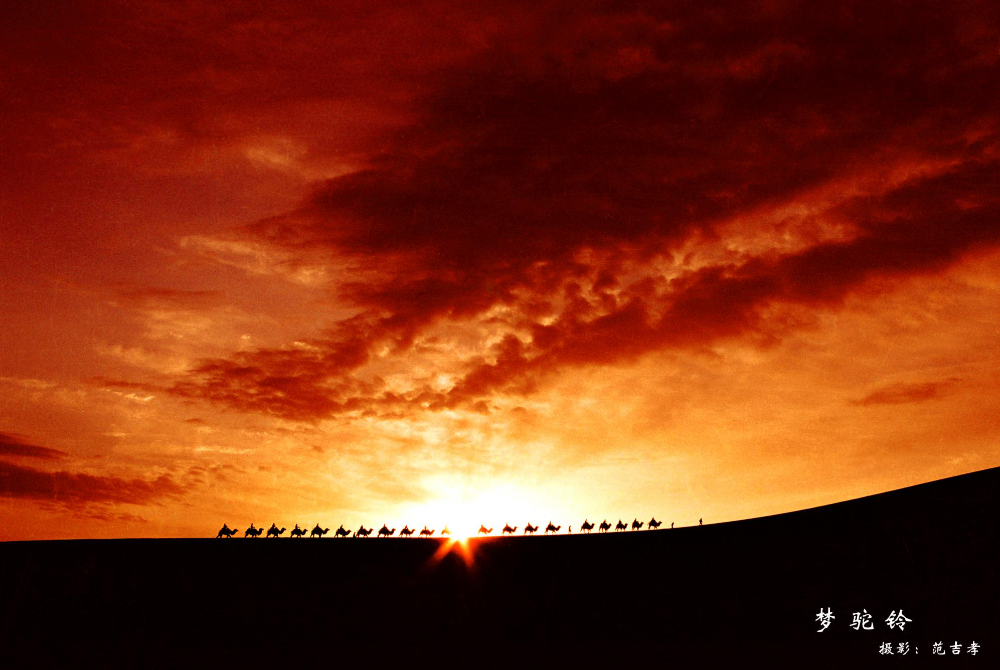
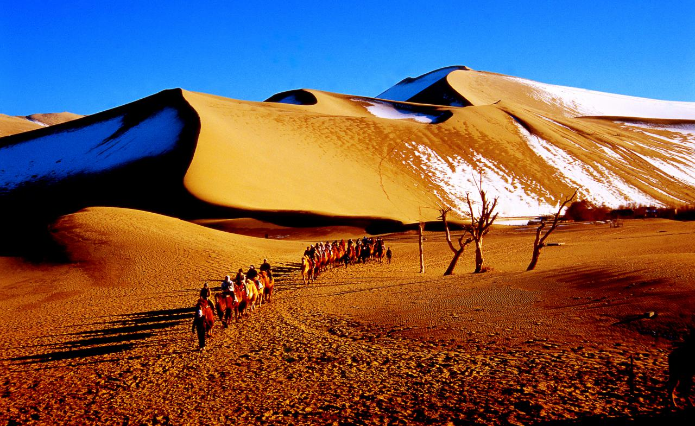
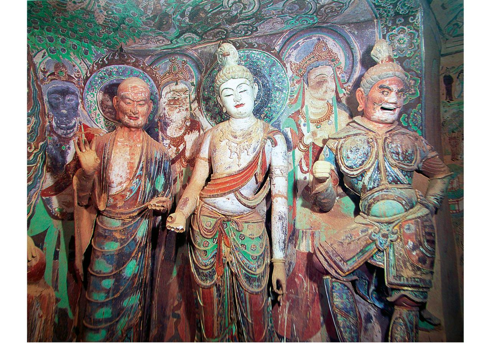
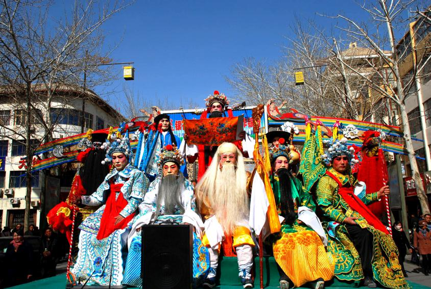
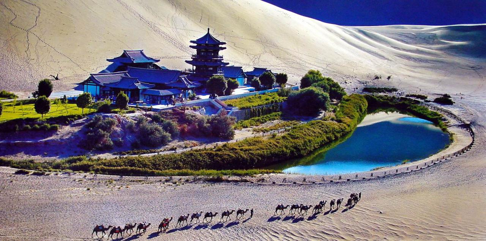
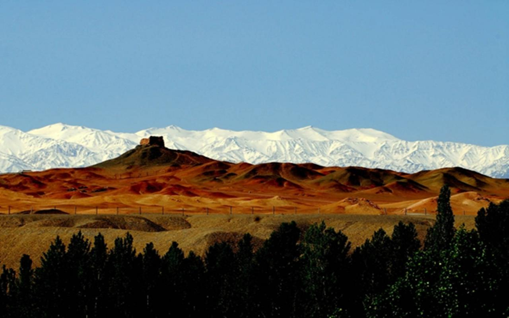
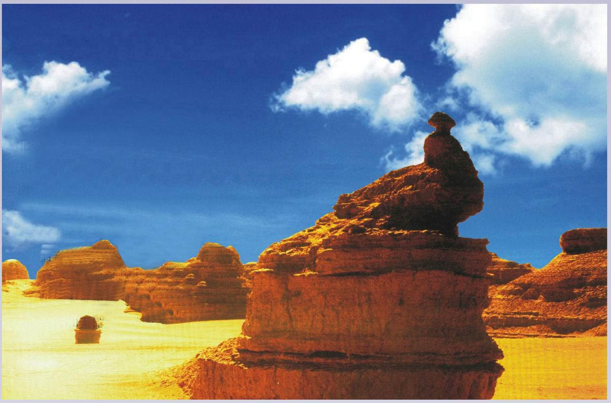

This winter where to play, Silk Road Pearl to Dunhuang
During the winter and spring to Dunhuang tourism, you can fully enjoy the pure air, bright sunshine, clean spring water, taste green food, you can experience a more environmentally friendly, healthy way of life; in the winter and spring to Dunhuang tourism, Enjoy the desert, Gobi, snow-capped mountains, glaciers, wetlands, Yadan landforms and other natural landscape, and truly feel the magnificent western scenery, in-depth experience, "Qiang flute why greedy willow, spring is not jade door", " Out of the sun no harm "mood.
winter and spring tour Dunhuang, had to do:
listen to Hiro's "Silk Road", in the long sand to be a real Walker
Kitaro once said that the creation of the "Silk Road", the most touched him is the Chinese people in the long history of the formation of the kind of deep soul, in that deep, people live, which he came Said to be deeply inspired. If you can take his music, came to the music in the description of this piece of land, quietly listening, the sound does not have to be too much, you can think of the ancient quiet, sigh fate illo, lamenting flowers, like Years of flow.
Before the murals in the Mogao Grottoes, earnestly marvel at an era
AD 366, Dunhuang, monk Lok Zong bitterly to this, see the opposite three dangerous mountains under the golden light, such as thousands of Buddha arranged, so this cut the first cave practice. Later the law of the monks have also opened a second cave next to practice. Slowly the original practice of the shameless for the complex of the Buddhist caves replaced, and the number of more and more, the ancient pious dependents - financiers, builders, celebrities based on the understanding and advocacy of the Buddha and built a different style The cave.
Now, you see the fountain dance on the fresco, see the beauty of children who clothing Luo Qi, drag brocade, Yaizhu Tsui, Shi Hong powder, dressed debut, dance low willow floor heart, song Taohuo fan at the end of the wind, even if you Prostitution is not deep, can not be Mogao Grottoes art deeply impressed. Each statue, every mural have breathing, through the Millennium, people shock and moved. When you are quiet, like a tail fish, walk through the three dangerous mountain, nine floors before the possession of the hole, only hold your breath, eyes look up, as if this can smell her breath, her pulse.
see a "Dunhuang music and dance" social fire show
for the oldest customs, "society" for the land of God, "fire" can evade evil. Worship social gods, song and dance sacrifice, intended to pray for good weather, grain bumper harvest, Cathay Pacific people, all the best. Dunhuang, often folk spontaneous organization of different styles of "social fire" activities. Dunhuang local traditional social fire jumping, playing the bear, peace drums, Pacific cars, dragon lights, stilts, lion dance, dry boat, running donkey, bamboo horse, iron core, big monk show Liu Tsui and so on. The introduction of the field of social fire fine in northern Shaanxi Yangge, Ansai waist drum, prestige gongs and drums, flower umbrella dance and so on. In recent years, also in accordance with the Dunhuang murals in the drums and dances, arranged with Dunhuang art style of large-scale social fire "Dunhuang music and dance." Rich and wonderful performance of the fire to the people of Hong Kong festive harvest, bless the New Year lucky feelings of the performance was most vividly.
If you come to Dunhuang in the Spring Festival, you will catch up with the fire show, Dunhuang people unique enthusiasm and bold will make your journey infected with an open-minded atmosphere.
Experience the swallowing of the swallowed mountains
"sand Ming Qing Ridge" is one of the ancient Dunhuang eight King. In Dunhuang meandering sand dunes, when hundreds of sandals enthusiasts together from the top of the hill down the slope, the whole mountain issued a thunderous roar, five kilometers outside the city can clearly hear the sound, the kind of Feeling really is able to let you instantly return to the battlefield hundreds of years ago, massive, imposing.
Slip, not only have courage, but also grasp the center of gravity and basic skills. You are sitting on a slippery sandboard, legs bent position, along the steep slope quickly down. At this time, the yellow sand flying, gently beat the body, sand slope will be issued under the drums of rumble, like a strong earthquake in the sky roar of the thunder, it is frightening shocking, whether it is eye , Ears, or limbs and minds are in this moment has been extremely satisfied and happy. The best of the country's sand hill in Gansu Dunhuang Mingsha, waiting for you to experience.
to Yumen Pass, Yang Guan, where there are Silk Road on the iron horse Jin Ge
Maybe before you leave, it's just a few loess walls, sporadic standing in the vast desert. Neither nor will it be gorgeous. Give you a reason to go to Yumen Guan Great Wall, that is when you really went to this wall under the time, a time has gone away for thousands of years will be fresh in your eyes. You put your face on the side of the old city wall, looked up, white clouds, the eternal heaven and earth. History, history, your eyes are the clouds of history.
go to Yadan, where there is the world you want in mind
to Dunhuang, you must go to see the magic of Yadan landform. Dunhuang Yadan National Geological Park, is currently the largest in Asia, the most mature geological form, the most ornamental value of the Yadan landform community. Dunhuang Yadan magnificent, beautifully stylized and rich and colorful, is a rare geological wonders. At the same time, it is also an important geological geomorphology and ecological environment research scientific exploration garden.
Here you will find her like a medieval city, where the world you want is here. Here, there are walls, streets, buildings, squares, churches, sculptures; its vivid, vivid, let you stare. Many of the world's famous buildings can find its epitome here, such as Beijing's Temple of Heaven, the Potala Palace in Tibet, the pyramids of Egypt, the Sphinx, the yurts on the grasslands, the Arab mosques everything, sculpture has a mighty generals , The desert lion, peacock open screen, silk camel team, fleet voyage, fish out of the sea, the mainstay ... ... countless, mix, vivid. You are in it, will feel into the architectural art of the exhibition hall, dizzying.
Dunhuang, there is no need to reason to persuade themselves to travel, like a dream, never need any reason! Where to play this year Spring Festival, Silk Road Pearl to Dunhuang!
This article is taken from Fenghuang Wang Click to view original